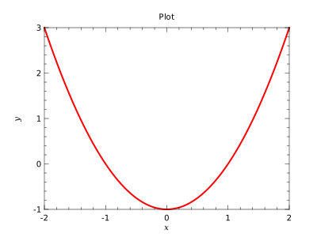

Plotting using PlPLotLib involves several basic steps that must be taken for the process to succeed. For a single line plot, the steps taken are the following:
1. Initialize the library (call setup) 2. Create a figure (call figure) 3. Specify the subplot (call subplot) 4. Specify axis ranges (call xylim) 5. Plot the data (call plot) 6. Draw axis ticks and numeric labels (call ticks) 7. Label the axes and subplot (call labels)
The same basic process is followed for all plot types. The most common variations from these step are the inclusion of more than one plot and the creation of a legend to distinguish between plots.
Example
program basic_prg !! Create a basic plot !! !!  use kinds_mod use utilities_mod use plplotlib_mod implicit none real(wp),dimension(:),allocatable::x,y x = linspace(-2.0_wp,2.0_wp,101) y = x**2-1.0_wp call setup(device='svgqt',fileName='examples/basic-%n.svg',figSize=[400,300]) call figure() call subplot(1,1,1) call xylim(mixval(x),mixval(y)) call plot(x,y,lineColor='r',lineWidth=2.0_wp) call ticks() call labels('#fix#fn','#fiy#fn','Plot') call show() end program basic_prg

Details about each step of the process are found below:
setupThe setup routine initializes the plplot library and must be the
first call made to the module. The output device can be specified
through device, while the size of the plots can be controlled through
figSize. After setup, these values unfortunately cannot be changed
during execution of the program.
Example
call setup(device='svgqt',figSize=[800,600])
figureThe figure routine creates a new figure on which to place plots. Its
size is defined at library setup and cannot be changed afterwards.
There are no options to this routine, but it must be called to setup
the window or file for output.
Example
call figure()
subplotAfter the creation of a figure, plots must be positioned on the output
surface. The subplot routine handles this process by breaking the
figure into rows and columns and selecting a cell in which to plot.
Basic usage might appear as the following:
call subplot(2,3,1)
The command splits the figure into two rows and three columns, as well as preparing the library to plot in the upper-left most of these cells.
Additionally, the subplot routine can force a particular aspect ratio for the plotting region, which is useful if the horizontal and vertical axes share the same units and should be scaled equally.
xylimA call to xylim is used to set the ranges of the plotting region. Most
often the routine mixval is used to get the needed boundary arrays to
specify these ranges.
The most commonly use form of this routine will appear close to the following:
real(wp),dimension(:),allocatable::x,y ... call xylim(mixval(x),mixval(y))
There are two other variants of this routine which set only the horizontal or vertical ranges of the plot.
plotThe basic plot routine draws a line plot in the defined plotting area
using the set ranges for each axis to scale the data from plot
coordinates to world coordinates on the output device. It requires
arrays of horizontal and vertical positions, commonly referred to as
x and y.
Basic usage might appear as the following:
real(wp),dimension(:),allocatable::x,y ... call plot(x,y)
ticksThe ticks routine is used to draw tick lines and labels on the axes, and
can control some aspects of this process.
Basic usage requires no arguments:
call ticks()
Additional routines exist to control the drawing of ticks on the horizontal and vertical axes separately.
labelsLabels can be added to the axes as well as the top of the plot using the
labels routine. The color of the labels may also be adjusted.
Example
call labels('x-Axis','y-Axis','Plot Title')
Additional routines exist to control the drawing of labels on the horizontal and vertical axes, and the plot title, separately.